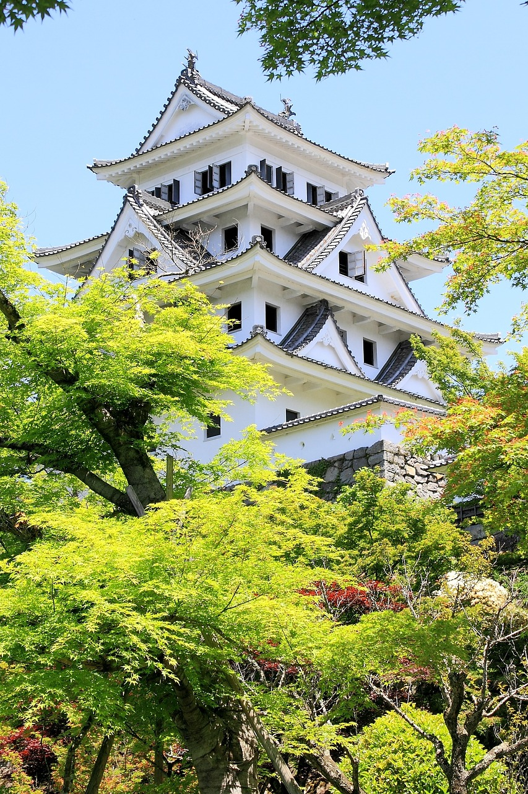
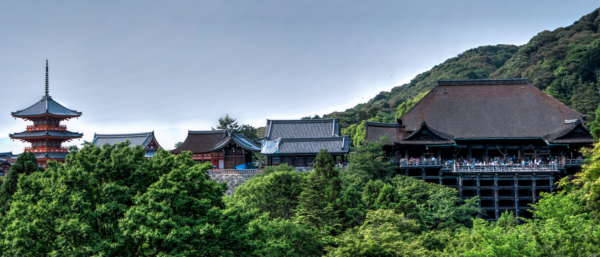

Four Amazing places you should visit in Japan
Japan is an amazing country and it is the combination of both the world on one side you will see an advanced, developed country with amazing cities and lots of technical development and on the other hand, you will experience wonderful natural sites and sceneries. So let's start our Journey to see 7 most amazing places you must visit while traveling to Japan.
Tokyo
As a Capital city, Tokyo offers you a variety of things to visit and have a sense of being in Japan, it gives you a picture of modern Japan, and also you could find plenty of traditional temples. It is basically an ultramodern-traditional city. Where you can experience overcrowded streets, trains, hectic lifestyles, Skyscrapers, and on the other hand chilled places like Traditional Temples made up of wooden roofs, gates, and so on..

Osaka
Osaka is known as the kitchen of Japan. It's a modern Japanese city and the center of food and drinks and also for its nightlife. You can enjoy eating traditional Japanese food and try some drinks and also experience some amazing markets.

Gujo Hachiman: The water city of Japan.
The perfect place to experience natural sites in Japan. This city is famous for its natural water system. Water is an essential part of the people of this city and it also plays a significant role in attracting tourists. The river water to canals the water flows in the entire city. You can see people enjoying this nature's gift as swimming, fishing, sitting relaxed at along the water canals and you will see fishes everywhere even in the drainage. Other than that the city uses this water for Drink, Cook, clean and passage as well.
Kyoto
The Holy City, A perfect city to experience Japanese traditional temples, natural beauty. It's one of the peaceful places on earth that attracts thousands of visitors every month. A beautiful area called Gion, located in Kyoto is famous for stone payments and traditional Japanese houses and you will see lots of people in traditional Japanese outfits which is so amazing to see. Kiyomizu temple is the most popular temple of Kyoto and it's also the world heritage site and in autumn this place looks so amazing.
